|  |
|---|
I studied at RMIT university in Melbourne I did a BA (majoring in photography), Studied graphic design at Shillington college.
I'm an Interactive Designer at Lash Creative.
Lash Creative is a digital communications agency with offices in Sydney, Australia and Seoul, Korea.
Our clients include: ING Direct, Sydney Opera House, ASICS, CSR, Brambles, Tropfest, BresicWhitney, PCFA, Wesley Mission, Shriro Commercial, Blanco, Omega, Everdure, Enware, BPAY.
We always place the audience in the centre of everything that we do. Our aim is to create sound strategies that inform visually crafted solutions to effect a change in the way our audience thinks, feels and does.
We take utmost pride in every project that we do, big or small. We believe that briefs should be written with the aim to effect a change in thinking, motivation or behaviour in the audience we are speaking to. Ultimately, we are creating these products for them, not for us.